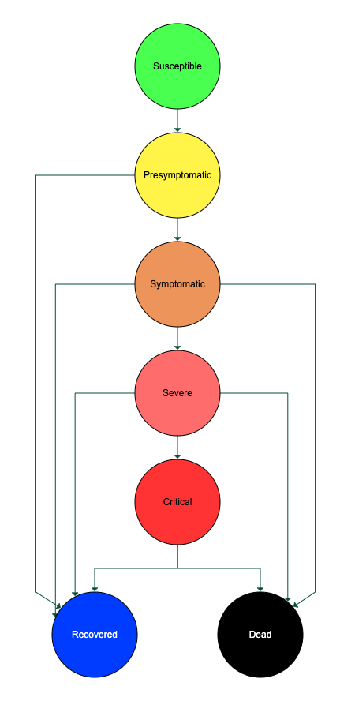

Base Disease Model
Disease Progression
For a given pathogen we assume a disease progression following the following diagramm.

An infected person will be considered exposed until they become infectious. After this they can stay without symptoms (resulting in asymptomatic cases) or progress through the pipeline above until leaving to the recovered or dead state.
Throughout GEMS we use the term "removed" for the state of an individual leaving this disease progression by either recover from the disease or dying.
Depending on the terminal state an individual reaches before being removed, we can categorize the infected individuals like in the following table.
| Symptoms Category | Terminal State |
|---|---|
| Asymptomatic | Presymptomatic |
| Mild | Symptomatic |
| Severe | Severe |
| Critical | Critical |
GEMS assigns different categories numerical values to represent them internally. Those are defined as constants within the module.
| Constant | Value |
|---|---|
GEMS.SYMPTOM_CATEGORY_NOT_INFECTED | 0 |
GEMS.SYMPTOM_CATEGORY_ASYMPTOMATIC | 1 |
GEMS.SYMPTOM_CATEGORY_MILD | 2 |
GEMS.SYMPTOM_CATEGORY_SEVERE | 3 |
GEMS.SYMPTOM_CATEGORY_CRITICAL | 4 |
As the symptom category and terminal state are closely related, the terms "exposed" and "asymptomatic" might be used synonymically as well as "mild" and "symptomatic".
Furthermore the progression for some symptom categories includes the need of hospitalization. Severe cases will have a given probability to need hospitalization, while criticl cases will always be hospitalized. Critical case furthermore have probability to need ventilation. Ventilated critical case have also a probability to need ICU (intensive care unit).
While asymptotic cases can't die by means of the disease, all other symptom categories are assigned a certain death probability as seen in the graphic.
Infectiousness
The infectiousness of an individual is tracked seperately from the disease state. Generally an individual should become infectious some time after becoming exposed and before getting symptoms. In asymptomatic cases, the individual will become infectious between becoming exposed and recovering from a disease.
Age Stratifiction
To estimate the disease progression, we make use of age-stratified stochastic matrices.
As an example consider the age groups 0-40, 40-80 and 80+ as well as the above mentioned four symptom categories of the disease progression. A possible age stratification matrix can be given by the following $3x4$ matrix.
\[\begin{bmatrix} 0.9 & 0.1 & 0.0 & 0.0\\ 0.5 & 0..3 & 0.2 & 0.0\\ 0.0 & 0.0 & 0.5 & 0.5 \end{bmatrix}\]
In this example the first row contains the probability of an individual between 0 and 40 years of age to end up in the symptom categories "Asymptomatic", "Mild", "Severe" or "Critical" in this order.
True- vs. Observed Cases
We generally differentiate "true" cases and "observed" cases. While a true case is an actual infection.